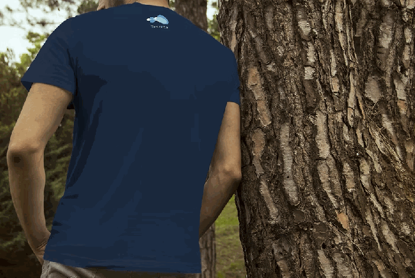
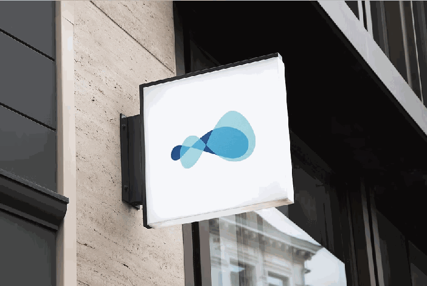

Developer
Understand application services and the dependencies around them.
DESIGN FOCUSService context & discoverability
Designing a 0-to-1 Enterprise Cloud Platform and Visual System
↓Infrastructure spans clouds and clusters. The people managing it need to understand services, ownership, and health—without getting lost in the underlying complexity.
Tetrate Service Bridge set out to simplify the service mesh experience, connect workloads across environments, and bridge traditional and modern infrastructure.
My scope was to design three workflows from scratch: onboarding, service inventory, and topology. I collaborated with Megha Damani on product design and worked with the PM to define the MVP’s primary users.
How might we help teams move from
“What is happening?” to “What can I do?”
Design framing for this case study. The work shown documents design intent and deliverables, rather than validated launch performance.
Stakeholder meetings and user stories informed three MVP personas and their journey maps.
Understand application services and the dependencies around them.
DESIGN FOCUSService context & discoverability
Identify unhealthy services and investigate latency across the system.
DESIGN FOCUSHealth signals & relationships
Get an overview of services and clarify team responsibility.
DESIGN FOCUSVisibility & ownership
Role summaries describe the design focus. These personas were stakeholder-informed; direct research with representative users remained a limitation.
I broke user stories into objects, actions, and attributes to establish a consistent grammar for the service experience.
Identify what users need to understand.
Consider frequency of use and user population.
Translate the model into the interface.
The object–action and object–attribute matrices connected the user stories to information architecture. Prioritizing objects and actions helped establish which capabilities deserved prominence in the MVP.
Three connected workflows turn a collection of services into a navigable operational picture.
Surface services without an owner, onboard them, and map ownership or an on-call team. The workflow makes responsibility part of setup.
Bring service health, metrics, and filters into a structured view. Support a closer look at individual services without losing the larger context.
DESIGN INTENT / Make services easier to find and inspect.
The dashboard brings together unhealthy services, alerts that need owners, and high-latency or high-traffic services. A D3.js streamgraph explores how those signals change over time.
DESIGN INTENT / Help teams decide where to investigate.
A force-directed D3.js graph explores service dependencies. Cloud and cluster groupings organize the network; red links and nodes highlight latency and unhealthy services.
Connection thickness expresses dependency relationships. Red links flag high latency; red dots and bubbles identify unhealthy services.
A contextual pop-up brings together health, metrics, and ownership or on-call assignment. This connects a system-level view to service-level action.
I created a UI style guide to support consistency and collaboration with other designers and front-end developers.
The product’s visual foundation aligned with Tetrate’s branding, extending the identity into interface colors and reusable visual treatments.
This was a foundational style guide. The original material does not establish a fully governed component library or measured adoption across teams.
Alongside the collaborative product work, I developed Tetrate’s brand identity: logo exploration, a brand style guide, and an identity kit.
BRANDING / ZHENQI CAI · JUN–JUL 2018
The identity explored continuity, cloud infrastructure, and exponential growth through the infinity symbol, a cloud, and a tetration graph. These were conceptual inputs to the mark—not evidence that viewers understood system behavior.


Original identity applications · Branding PDF, p. 7. Brand work is presented as a visual design contribution; no causal claim about fundraising or business growth is made.
Personas and journey maps, object–action architecture, user flows, and high-fidelity explorations for onboarding, inventory, dashboard, and topology.
A UI style guide aligned with the brand, plus logo exploration, brand guidelines, and identity applications.
Testing with representative users was still planned. The source provides no completed usability results or verified launch metrics.
Domain knowledge is essential when designing enterprise tools. Learning the technical model helped me communicate with engineers and explore visualizations in D3.js.
I would bring direct user research earlier into the process, then test whether people can identify unhealthy services, reason about dependencies, and assign ownership.
The next questions are specific: How should developers investigate the cause of latency? How should warning thresholds and metrics be customized? How do needs change as users gain experience?
Re-edited from Zhenqi Cai’s Tetrate Service Bridge and Tetrate Branding PDFs. Product design credits: Zhenqi Cai and Megha Damani. Branding credits: Zhenqi Cai. All project visuals are taken from the original PDFs; captions identify source pages. Historical design work, 2018.